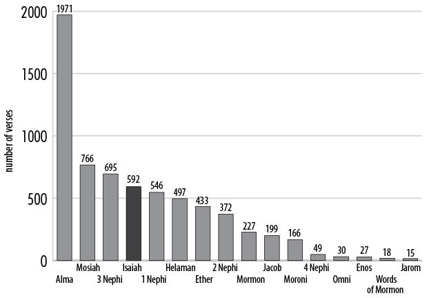

What is the identity of the “House of Jacob [who] come forth out of the waters of Judah”? (20:1) “The phrase ‘out of the waters of Judah’ refers to those of Judah who are baptized into the Church. The Prophet Joseph Smith added the phrase ‘or out of the waters of baptism’ to the text in the third edition of the Book of Mormon (1840). This clarifies the meaning of the term ‘waters of Judah’” (Nyman, Great Are the Words of Isaiah, 170).
What is the concern with these people who call themselves of the holy city? (20:2) “Despite their covenants, these Church members do not lean upon or take hold of the Lord” (Parry et al., Understanding Isaiah, 416).
What is meant by the metaphor “thy neck is an iron sinew”? (20:4) Gerald Lund explained: “When Isaiah says, ‘thy neck is an iron sinew’ (Isa. 48:4) and when Jeremiah notes the people ‘made their neck stiff that they may not hear, nor receive instruction’ (Jer. 17:23) the image is that of stubborn pride. The reason for this is linked to another function of the neck. It holds the head and turns it. Since the bowing of the head is a sign of humility, to be stiff-necked is the symbol of pride” (“Understanding Scriptural Symbols,” 25).
What is one reason the Lord shows future events to his prophets? (20:5) “The Lord shows the future so that false gods will not be worshipped or given credit for the Lord’s doings (v. 5). The people of Judah had been shown and told of future events, but they had rejected this knowledge. The Lord knew they would reject it. He told them anyway so they would be accountable for their sins. An understanding of foreknowledge and why it is shared with the prophets is a unique and an important contribution that comes from Isaiah’s writing” (Nyman, I, Nephi, Wrote This Record, 305).
“It is important to know why the Lord shows the future to his prophets. The principle of foreknowledge is difficult to understand, but several prophets who have been shown the future have affirmed its importance. Nephi was shown the future until the beginning of the last days. Then he was told that an apostle of the Lamb of God would write ‘many things which thou hast seen; and behold the remainder shalt thou see.’ The apostle’s name was John. He was also told that others ‘hath (God) shown all things’ (1 Nephi 14:24–27). The Lord had also ‘showed unto the brother of Jared all the inhabitants of the earth which had been, and also all that would be’ (Ether 3:25). ‘Enoch saw the day of the coming of the Son of Man, even in the flesh’ (Moses 7:47), and that he would come ‘in the last days, to dwell on the earth in righteousness for the space of a thousand years’ (Moses 7:65). The Lord told Abraham and Isaiah that ‘he knew the end from the beginning’ (Abraham 2:6; Isaiah 46:10). Although the text doesn’t say they saw all things, they were shown great and marvelous things, which may have included to the end of times” (Nyman, I, Nephi, Wrote This Record, 304–5).
What does the Lord’s willingness to spare Israel teach about the power and responsibility of bearing His name? (20:9) “The Lord Jehovah had placed his name and the promise of his power upon the nation of Israel. They were his people; they were to become his peculiar treasure. He had given that name and power to none other, and had no intention of his holy name being forgotten, ignored, or profaned by the surrounding nations. ‘I will not suffer my name to be polluted,’ he said, ‘and I will not give my glory unto another’ (1 Ne. 20:4, 8–9, 11)” (Millet, “Nephi on the Destiny of Israel,” 78).
What is the divine purpose of affliction? (20:10) “Most of us experience some measure of what the scriptures call ‘the furnace of affliction’ (Isaiah 48:10; 1 Nephi 20:10). Some are submerged in service to a disadvantaged family member. Others suffer the death of a loved one or the loss or postponement of a righteous goal like marriage or childbearing. Still others struggle with personal impairments or with feelings of rejection, inadequacy, or depression. Through the justice and mercy of a loving Father in Heaven, the refinement and sanctification possible through such experiences can help us achieve what God desires us to become” (Oaks, “Challenge to Become,” 33–34).
Isaiah in the Book of Mormon
“If the Isaiah verses in the Book of Mormon were removed from their present position and collected into one place, [they] would constitute a book with 592 verses, and be larger than what would remain in 12 of the 15 books in the Book of Mormon. The accompanying graph lists the number of verses in each book. . . . Books are listed in order of their size, demonstrating that a book of Isaiah verses would be the fourth largest in the Book of Mormon” (Garner, Search These Things Diligently, 68–69).
What is the significance of the right hand? (20:13) “There are numerous passages in the scriptures referring to the right hand, indicating that it is a symbol of righteousness and was used in the making of covenants. . . . The right hand or side is called the dexter and the left the sinister. Dexter connotes something favorable; sinister, something unfavorable or unfortunate” (Smith, Answers to Gospel Questions, 1:157–58).
“For some reason that is not explained completely in our present scriptures, the term right hand has always indicated a favorable or preferred position. When the Savior was resurrected, he sat down ‘on the right hand of the Father’ (D&C 20:24); the twelve apostles will stand at the right hand of Jesus Christ when he comes in power and glory at the time of his second coming (D&C 29:12); and the righteous will be gathered on the right hand of the Savior ‘unto eternal life’ (D&C 29:27). On the other hand (intended partially as a pun), the wicked are designated as being on the left hand of the Lord (D&C 19:5; 29:27).
“Use of right hand in ordinances. The custom, evidently by divine direction, from the very earliest time, has been to associate the right hand with the taking of oaths, and in witnessing or acknowledging obligations. The right hand has been used, in preference to the left hand, in officiating in sacred ordinances where only one hand is used. The earliest reference we have to the superiority of the right hand over the left, in blessing, is found in the blessing of Jacob to his two grandsons, Ephraim and Manasseh, when he placed his hand ‘wittingly’ upon the heads of the boys (Gen. 48:13–14).
“Earlier, when Abraham sent his servant to Abraham’s own kindred to find a wife for Isaac, he had the servant place his hand under his (Abraham’s) thigh, and swear to him that he would accomplish his mission. Evidently, this was the servant’s right hand. The Lord said through Isaiah: ‘Fear thou not; for I am with thee: be not dismayed; for I am thy God: I will strengthen thee; yea, I will help thee; yea, I will uphold thee with the right hand of my righteousness’ (Isa. 41:10).
“In the Psalms we read: ‘The Lord said unto my Lord, Sit thou at my right hand, until I make thine enemies thy footstool’ (Ps. 110:1).
“It is the custom to extend the right hand in token of fellowship. The right hand is called the dexter, and the left, the sinister; dexter means right and sinister means left. Dexter, or right, means favorable or propitious. Sinister is associated with evil, rather than good. Sinister means perverse.
“We take the sacrament with the right hand. We sustain the authorities with the right hand. We make acknowledgment with the right hand raised’ (Joseph Fielding Smith, Doctrines of Salvation, 3:107–8).
Does the Lord speak in secret? (20:16–17) “As Paul declared, ‘This thing was not done in a corner’ (Acts 26:26). No saving principle of the gospel of Jesus Christ, is to be found only in an obscure text. ‘The voice of the Lord is unto all men, and there is none to escape; and there is no eye that shall not see neither ear that shall not hear, neither heart that shall not be penetrated’ (D&C 1:2; see also 2 Nephi 26: 23–24)” (McConkie and Millet, Doctrinal Commentary, 1:155–156).
What is the significance of Isaiah’s imagery of the river and the waves? (20:18) Lehi used similar imagery as he exhorted his sons Laman and Lemuel (see 1 Nephi 2:8–10). “Those who observe God’s commandments experience a peace of conscience that flows continually, even as a river does. Their righteousness will have a rippling and far-flung effect, just as the waves of the sea are set in motion by the forces of nature” (Brewster, Isaiah Plain and Simple, 184).
What is the symbolism of Babylon and Chaldeans? (20:20) “As with other great ancient empires, Babylon’s ascendancy to wealth and glory was accompanied by moral decay, wickedness, and iniquity. Babylon’s corruption was so extensive that the very name became a symbol for worldliness, spiritual wickedness, and Satan’s kingdom” (Book of Mormon Student Manual [2009], 46). The Chaldeans were a subgroup of the Babylonian empire.
“God decreed that the Medes should completely destroy Babylon in its wickedness (see Isaiah 13:17–22). Under the rule of Cyrus the Great, an alliance of Medes and Persians dammed the mighty Euphrates River and marched through the riverbed and under the walls of Babylon to capture the city and overthrow the empire around 538 b.c. When Isaiah spoke of Babylon, he referred to both the actual empire as well as spiritual Babylon. Isaiah foresaw the graphic destruction of the Babylon of his day as a result of the great wickedness of its people. Consequently, he used the term Babylon in his prophecies to typify the spiritual condition of the latter days and the judgment that would come upon the world at the Second Coming of Jesus Christ (see D&C 1:16).
“The Doctrine and Covenants clarifies Isaiah’s exhortation to ‘go ye forth of Babylon’ (1 Nephi 20:20). Those who ‘bear the vessels of the Lord’ must be clean, leaving the wickedness of the ‘spiritual Babylon’ behind them (D&C 38:42; 133:5, 14)” (Book of Mormon Student Manual [2009], 46).
Why the warning about leaving Babylon? (20:20) “Why do some of our youth risk engaging in ritual prodigalism, intending to spend a season rebelling and acting out in Babylon and succumbing to that devilishly democratic ‘everybody does it’? Crowds cannot make right what God has declared to be wrong. Though planning to return later, many such stragglers find that alcohol, drugs, and pornography will not let go easily. Babylon does not give exit permits gladly. It is an ironic implementation of that ancient boast: ‘One soul shall not be lost’ (Moses 4:1)” (Maxwell, “Answer Me,” 33).
